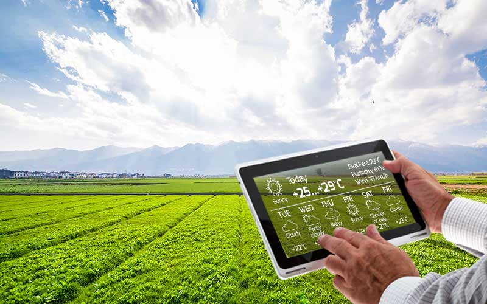

Tác động lớn của IOT vào canh tác thông minh.

IoT công nghiệp đã là một động lực thúc đẩy sản xuất nông nghiệp tăng với chi phí thấp hơn. Trong vài năm tới, việc sử dụng các giải pháp thông minh do IoT cung cấp sẽ tăng lên trong các hoạt động nông nghiệp. Trên thực tế, rất ít báo cáo gần đây nói rằng việc cài đặt thiết bị IoT sẽ chứng kiến tốc độ tăng trưởng kép hàng năm là 20% trong ngành nông nghiệp. Và không. thiết bị kết nối (nông nghiệp) sẽ tăng từ 13 triệu trong năm 2014 lên 225 triệu vào năm 2024.
Sau đây là những lợi ích của việc áp dụng công nghệ mới - Internet of Things trong nông nghiệp:
-
Điều kiện khí hậu:

Khí hậu đóng một vai trò rất quan trọng đối với nông nghiệp. Và có kiến thức không đúng về khí hậu làm suy giảm nghiêm trọng số lượng và chất lượng sản xuất của cây trồng. Nhưng các giải pháp IoT cho phép bạn biết các điều kiện thời tiết theo thời gian thực. Các cảm biến được đặt bên trong và bên ngoài các lĩnh vực nông nghiệp. Họ thu thập dữ liệu từ môi trường được sử dụng để chọn đúng loại cây trồng có thể phát triển và duy trì trong điều kiện khí hậu cụ thể. Toàn bộ hệ sinh thái IoT được tạo thành từ các cảm biến có thể phát hiện các điều kiện thời tiết theo thời gian thực như độ ẩm, lượng mưa, nhiệt độ và chính xác hơn. Có rất nhiều không. các cảm biến có sẵn để phát hiện tất cả các tham số này và định cấu hình phù hợp với yêu cầu canh tác thông minh của bạn. Những cảm biến này theo dõi tình trạng của cây trồng và thời tiết xung quanh chúng. Nếu bất kỳ điều kiện thời tiết đáng lo ngại được tìm thấy, sau đó một cảnh báo được gửi. Những gì được loại bỏ là sự cần thiết của sự hiện diện vật lý trong điều kiện khí hậu xáo trộn, cuối cùng làm tăng năng suất và giúp nông dân gặt hái được nhiều lợi ích nông nghiệp. - Nông nghiệp chính xác:
Nông nghiệp chính xác / Nông nghiệp chính xác là một trong những ứng dụng nổi tiếng nhất của IoT trong Nông nghiệp. Nó làm cho thực hành canh tác chính xác hơn và được kiểm soát bằng cách hiện thực hóa các ứng dụng canh tác thông minh như giám sát chăn nuôi, theo dõi xe, quan sát thực địa, và giám sát hàng tồn kho. Mục tiêu của canh tác chính xác là phân tích dữ liệu, được tạo ra thông qua các cảm biến, để phản ứng tương ứng. Nông nghiệp chính xác giúp nông dân tạo dữ liệu với sự trợ giúp của các cảm biến và phân tích thông tin đó để đưa ra quyết định thông minh và nhanh chóng. Có rất nhiều kỹ thuật canh tác chính xác như quản lý thủy lợi, quản lý chăn nuôi, theo dõi xe và nhiều hơn nữa đóng vai trò quan trọng trong việc tăng hiệu quả và hiệu quả. Với sự trợ giúp của canh tác chính xác, bạn có thể phân tích các điều kiện đất và các thông số liên quan khác để tăng hiệu quả hoạt động. Không chỉ vậy, bạn cũng có thể phát hiện các điều kiện làm việc trong thời gian thực của các thiết bị được kết nối để phát hiện mức nước và chất dinh dưỡng. - Nhà kính thông minh:
Để làm cho nhà kính của chúng ta thông minh, IoT đã cho phép các trạm thời tiết tự động điều chỉnh các điều kiện khí hậu theo một bộ hướng dẫn cụ thể. Việc áp dụng IoT trong Nhà kính đã loại bỏ sự can thiệp của con người, do đó làm cho toàn bộ quá trình có hiệu quả về chi phí và tăng độ chính xác cùng một lúc. Ví dụ, sử dụng các cảm biến IoT chạy bằng năng lượng mặt trời sẽ xây dựng các nhà kính hiện đại và rẻ tiền. Các cảm biến này thu thập và truyền dữ liệu thời gian thực giúp theo dõi trạng thái nhà kính rất chính xác trong thời gian thực. Với sự trợ giúp của các cảm biến, mức tiêu thụ nước và trạng thái nhà kính có thể được theo dõi thông qua email hoặc thông báo SMS. Tưới tự động và thông minh được thực hiện với sự trợ giúp của IoT. Những cảm biến này giúp cung cấp thông tin về áp suất, độ ẩm, nhiệt độ và ánh sáng. - Phân tích dữ liệu:
Hệ thống cơ sở dữ liệu thông thường không có đủ dung lượng lưu trữ cho dữ liệu được thu thập từ các cảm biến IoT. Lưu trữ dữ liệu dựa trên đám mây và Nền tảng IoT đầu cuối đóng vai trò quan trọng trong hệ thống nông nghiệp thông minh. Các hệ thống này được ước tính đóng một vai trò quan trọng để các hoạt động tốt hơn có thể được thực hiện. Trong thế giới IoT, các cảm biến là nguồn thu thập dữ liệu chính trên quy mô lớn. Dữ liệu được phân tích và chuyển đổi thành thông tin có ý nghĩa bằng các công cụ phân tích. Các phân tích dữ liệu giúp phân tích các điều kiện thời tiết, điều kiện chăn nuôi và điều kiện mùa màng. Dữ liệu thu thập thúc đẩy sự đổi mới công nghệ và do đó đưa ra quyết định tốt hơn. Với sự trợ giúp của các thiết bị IoT, bạn có thể biết trạng thái thời gian thực của cây trồng bằng cách thu thập dữ liệu từ các cảm biến. Sử dụng phân tích dự đoán, bạn có thể có được cái nhìn sâu sắc để đưa ra quyết định tốt hơn liên quan đến thu hoạch. Phân tích xu hướng giúp nông dân biết điều kiện thời tiết sắp tới và thu hoạch mùa màng. IoT trong ngành nông nghiệp đã giúp nông dân duy trì chất lượng cây trồng và độ phì nhiêu của đất, do đó nâng cao khối lượng và chất lượng sản phẩm. - Máy bay không người lái nông nghiệp:
Tiến bộ công nghệ gần như đã cách mạng hóa các hoạt động nông nghiệp và sự ra đời của máy bay không người lái nông nghiệp là sự gián đoạn xu hướng. Máy bay không người lái mặt đất và trên không được sử dụng để đánh giá sức khỏe cây trồng, giám sát cây trồng, trồng trọt, phun thuốc và phân tích thực địa. Với chiến lược và kế hoạch phù hợp dựa trên dữ liệu thời gian thực, công nghệ drone đã mang lại sự phát triển và trang điểm cao cho ngành nông nghiệp. Máy bay không người lái có cảm biến nhiệt hoặc đa bán cầu xác định các khu vực cần thay đổi trong tưới tiêu. Khi cây trồng bắt đầu phát triển, các cảm biến chỉ ra sức khỏe của chúng và tính toán chỉ số thực vật của chúng. Cuối cùng máy bay không người lái thông minh đã làm giảm tác động môi trường. Các kết quả đã được như vậy đã có một sự giảm thiểu lớn và hóa chất thấp hơn nhiều đến nước ngầm.